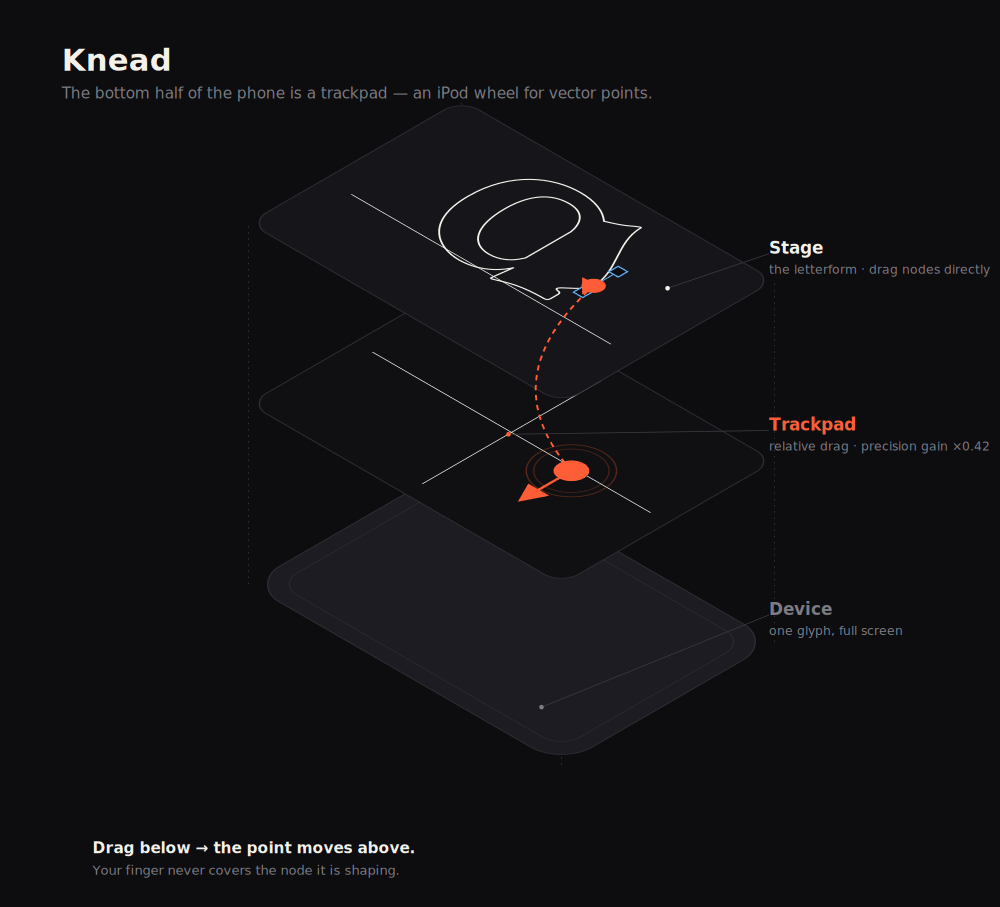
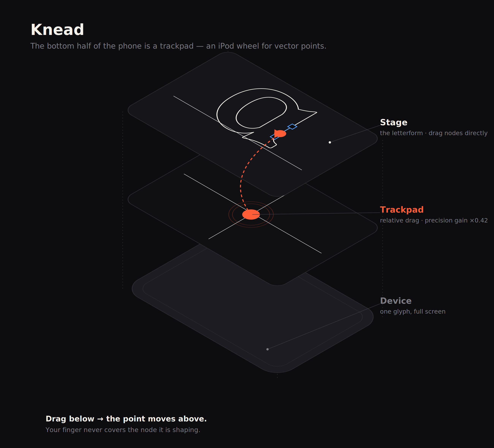

Case study · Tool · Type design · iOS
Editing a typeface one letter at a time, on a phone — by turning the bottom half of the screen into a precision trackpad.
The problem
Type and vector tools are built for a mouse: a 1 px cursor, a big canvas, hover states. Move that onto a phone and two things break. Your finger covers the exact point you're trying to move — you can't see what you're doing. And precision evaporates: a thumb is ~45 px wide, but a curve handle needs sub-pixel nudges.
So mobile type tools mostly don't exist, and the ones that try just shrink the desktop UI. The interesting question isn't “how do we fit the tool on a phone” — it's “what does a phone do better?”
The insight
One letter fills the screen. The bottom half becomes an iPod-style control surface that drives the point up top — so your finger is never on the thing it's shaping.
Select a node, then drag anywhere on the pad below. Movement is relative and geared down (a precision gain of ~0.42), so a big, comfortable thumb swipe becomes a tiny, exact move on the glyph. It's the same trick a laptop trackpad plays — your hand and the cursor live in different places — applied to vector editing.


How it works
Drag the anchor points and bezier handles right on the glyph — fast, for big gestural moves.
For precision: select, then drag below. Finger off the glyph, geared down, with a Fine↔Bold sensitivity slider.
Aim the pad at the anchor or either of its two curve handles. Step ‹ › along the outline instead of poking tiny dots.
Toggle a node's continuity; smooth keeps the two handles colinear as you pull one. Fill to preview, undo/reset per letter, export SVG.
The type system
The letters aren't faked paths — they're actual font outlines. Each glyph is extracted with fontTools, its TrueType quadratics converted to cubic béziers, and baked to JSON the editor reads. Pick a class from the dropdown and the whole letterform — and its node structure — changes underneath you.
| Family | Typeface | Nodes in “a” |
|---|---|---|
| Serif | Young Serif | 25 |
| Sans | National Park | 23 |
| Mono | JetBrains Mono | 20 |
| Display | Gloock | 22 |
| Blackletter | UnifrakturMaguntia | 33 |
| Pixel | Silkscreen | 16 |
A blackletter a carries 33 control points; a pixel one only 16 — so each family genuinely feels different to mould. All six are OFL; blackletter is pulled live from Google Fonts, the rest from an open set.
The craft
The whole thing is vanilla JS and one SVG, redrawn each frame; pointer events unify mouse, touch and trackpad so the same code runs everywhere. It's an installable PWA — “Add to Home Screen” and it runs full-screen in airplane mode. Even the diagram on this page is generated from a script, not drawn by hand, so the projection and the precision gain stay honest.
Try it
Best on a phone, in portrait. Tap a point on the a, drag on the pad, switch families.
Where it's going
The web prototype proves the interaction; the product is native iOS. SwiftUI for the shell, a Canvas/Metal layer for the glyph, and the things a browser can't give you: 120 Hz, real haptics on grab and snap, importing any installed font via CoreText to edit its actual glyphs, and exporting to .glyphs / UFO. The data model and both interactions port over unchanged.